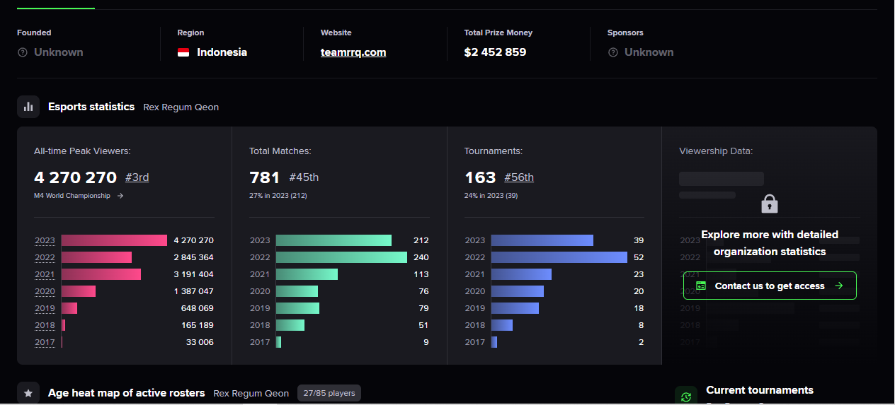

RRQ Hoshi Indonesia, Tim Esports Paling Banyak Ditonton Nomor 2 di Dunia
RRQ Hoshi, tim E-sport yang berasal dari Indonesia berhasil memiliki penonton online terbanyak di dunia pada tahun 2023 .
TEAM RRQ Berdasarkan data dari Esports Charts, RRQ HOSHI berada di peringkat 2 tim dengan penonton terbanyak sepanjang tahun 2023. Angka yang terlihat di gambar membuktikan RRQ HOSHI merupakan salah satu tim yang paling terkenal di Indonesia dan Dunia